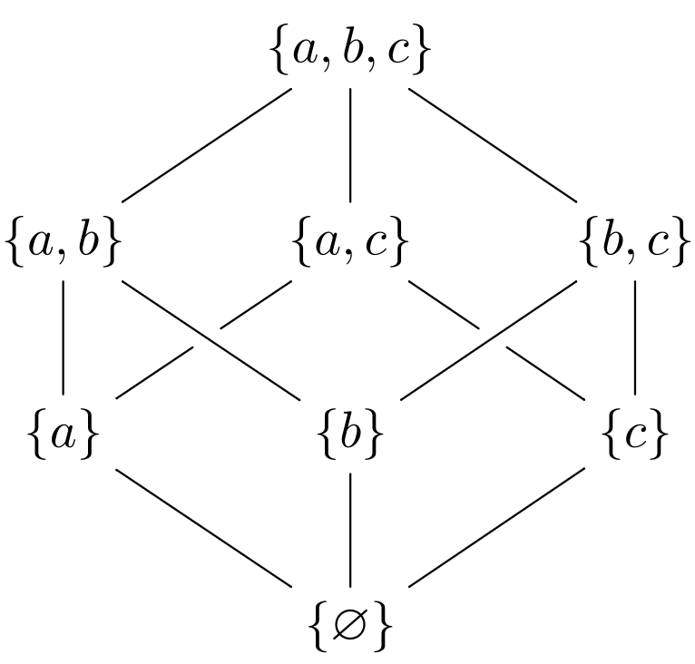

Knaster Tarski Kleene for complete lattices
Knaster Tarski Kleene
Knaster-Tarski-Kleene theorem (for complete lattices) states that given a complete lattice with an order mesure \(\langle L, \sqsubseteq\rangle\) and a monotone function \(f \; : \; L \to L \mid x \sqsubseteq y \Rightarrow f(x) \sqsubseteq f(y)\) the set of fixpoints \(\{x \in L \mid f(x) = x\}\) is a complete lattice.
Proof
Given a complete lattice \((L, \sqsb)\) and a monotone function over it
\(f \td L \rightarrow L\)
\(x \sqsb y \Rightarrow f \; x \sqsb f \; y\)
we'll call pre the set of pre-fixpoints \(\{x \mid f \; x \sqsb x\}\) and post the set of post-fixpoints \(\{x \mid x \sqsb f \; x\}\). We'll prove that
- the least fixpoint and the glb of pre exist and they are identical
- the greatest fixpoint and the lub of post exists and they are the same
- the set of fixpoints of \(f\) build a complete lattice.
- \(\lfp\) and glb(pre) exists
and they are identical
pre = \(\{x \mid f(x) \sqsb x\} \subseteq L\) \(\Rightarrow\) \(\exists \glb(pre) = p\) (bc pre \(\subseteq L\)) \(\Rightarrow\) \(p \sqsb x \quad \forall x \in \) pre \(\Rightarrow\) \(p \sqsb x \Rightarrow f(p) \sqsb f(x)\) By monotonicity \(\Rightarrow\) \(f(p) \sqsb f(x) \sqsb x\) Since \(x \in\) pre This means that \(f(p)\) is a lower bound of pre. Since \(p\) is the greatest lower bound it holds that
(1) \(\Rightarrow\) \(f(p) \sqsb p\) \(\Rightarrow\) \(f(f(p)) \sqsb f(p)\) By monotonicity \(\Rightarrow\) \(f(p) \in \) pre by definition of pre (2) \(\Rightarrow\) \(p \sqsb f(p)\) by definition of pre \(\Rightarrow\) \(p = f(p)\) because of (1) and (2) In order to conclude, we just need to observe that \(\forall x \) s.t. \(x\) is fixpoint \(f \; x \sqsb x\) (if \(x\) is fixpoint, it is also a pre-fixpoint), therefore, since \(p\) is a the glb of pre \(\Rightarrow p\) is the glb of the fixpoints: \(p\) is the least fixpoint.
- gfp and \(\lub\)(post) exists
and they are identical
post = \(\{x \mid x \sqsb f(x)\} \subseteq L\) \(\Rightarrow\) \(\exists \lub(post) = p\) (bc post \(\subseteq L\)) \(\Rightarrow\) \(x \sqsb p \quad \forall x \in \) post \(\Rightarrow\) \(x \sqsb p \Rightarrow f(x) \sqsb f(p)\) By monotonicity \(\Rightarrow\) \(x \sqsb f(x) \sqsb f(p)\) Since \(x \in\) post This means that \(f(p)\) is an upper bound of post. Since \(p\) is the least upper bound, it holds that
(1) \(\Rightarrow\) \(p\sqsb f(p)\) \(\Rightarrow\) \(f(p) \sqsb f(f(p))\) By monotonicity \(\Rightarrow\) \(f(p) \in \) post by definition of post (2) \(\Rightarrow\) \(f(p) \sqsb p\) by definition of post \(\Rightarrow\) \(p = f(p)\) because of (1) and (2) In order to conclude, we just need to observe that \(\forall x \) s.t. \(x\) is fixpoint \(x \sqsb f(x)\) (if \(x\) is fixpoint, it is also a post-fixpoint), therefore, since \(p\) is a the lub of post \(\Rightarrow p\) is the lub of the fixpoints: \(p\) is the greatest fixpoint.
- \((\{x \mid f \; x = x\}, \sqsb)\)
- is a complete lattice: To
prove this we must show that each subset has a supremum and
infimum that are fixpoints.
- Supremum:
- Consider \[W \subseteq fix \quad
\text{a subset of fixpoints}\] Since it is a subset of the
original complete lattice \(L\) it exists \[q = \lub(W) \in L\]
what we must now show is that \(W\) has a supremum that is a
fixpoint (e.g. each subset of \(fix\) has a supremum in \(fix\),
therefore \(fix\) is a complete lattice). Consider now \[\hat{W} =
\{x \mid q \sqsb x \quad x \in L\}\] by definition we can say
\[q \in \hat{W}, \quad q = \glb(\hat{W})\]
\(\hat{W}\) is a complete lattice:
\(q = \glb(\hat{W}) \in \hat{W}\) by hypothesis (1) \(q \sqsb \lub(\hat{W})\) by definition of \(\hat{W}\) and \(\lub\) \(\Rightarrow\) \(\lub(\hat{W}) \in \hat{W}\) because of (1) \(\Rightarrow\) \(\hat{W}\) is a complete lattice \(\hat{W}\) is closed under a generic monotone function:
\(w\sqsb q \quad q\sqsb x\) \(\forall w\in W, x \in \hat{W}\) \(\Rightarrow\) \(f(w) \sqsb f(q) \sqsb f(x)\) by monotonicity \(\Rightarrow\) \(w\sqsb f(x)\) \(\forall w\in W, x \in \hat{W}\) Which means that \(f(x)\) is an upper bound on \(W\), but this means \[q = \lub(W) \Rightarrow q \sqsb f(x)\] which again means \[f(x) \in \hat{W}\] by definition of \(\hat{W}\)
\(f\) is monotonic over a complete lattice, which means:
| \(\Rightarrow\) | \(\exists \; \lfp(f) = \hat{q} \in \hat{W}\) | |
| \(\Rightarrow\) | \(q \sqsb \hat{q}\) | by definition of \(\hat{W}\) |
\(\hat{q}\) is a fixpoint greater than every element of the subset \(W \subseteq fix\)
\(\hat{q}\) is supremum of \(W\)
- Infimum:
- Consider \[W \subseteq fix \quad \text{a subset of
fixpoints}\] Since it is a subset of the original complete
lattice \(L\) it exists \[q = \glb(W) \in L\] what we must now
show is that \(W\) has an infimum that is a fixpoint (e.g. each
subset of \(fix\) has a supremum in \(fix\), therefore \(fix\)
is a complete lattice). Consider now \[\hat{W} = \{x \mid x
\sqsb q \quad x \in L\}\] by definition we can say \[q \in
\hat{W}, \quad q = \lub(\hat{W})\]
\(\hat{W}\) is a complete lattice:
\(q = \glb(\hat{W}) \in \hat{W}\) by hypothesis (1) \(\glb(\hat{W}) \sqsb p\) by definition of \(\hat{W}\) and \(\glb\) \(\Rightarrow\) \(\glb(\hat{W}) \in \hat{W}\) because of (1) \(\Rightarrow\) \(\hat{W}\) is a complete lattice \(\hat{W}\) is closed under a generic monotone function:
\(x\sqsb q \quad q\sqsb w\) \(\forall w\in W, x \in \hat{W}\) \(\Rightarrow\) \(f(x) \sqsb f(q) \sqsb f(w)\) by monotonicity \(\Rightarrow\) \(f(x) \sqsb w\) \(\forall w\in W, x \in \hat{W}\) Which means that \(f(x)\) is an upper bound on \(W\), but this means \[q = \glb(W) \Rightarrow q \sqsb f(x)\] which again means \[f(x) \in \hat{W}\] by definition of \(\hat{W}\)
\(f\) is monotonic over a complete lattice, which means:
| \(\Rightarrow\) | \(\exists \; \lfp(f) = \hat{q} \in \hat{W}\) | |
| \(\Rightarrow\) | \(q \sqsb \hat{q}\) | by definition of \(\hat{W}\) |
\(\hat{q}\) is a fixpoint greater than every element of the subset \(W \subseteq fix\)
\(\hat{q}\) is infimum of \(W\)
The superemum (or dually infinimum) of a subset \(W\) of fix is not necessarely in fix
As counterexample consider the complete lattice \[\langle \wp(\{a,b,c\}), \subseteq \rangle \quad \text{and the function} \quad f(x) = \begin{cases} x & |x| \leq 1 \\ \{a,b,c\} & \text{otherwise}\end{cases}\]
Whose hasse diagram is

The function is clearly monotonic: if we consider \(x\subseteq y\) and we explore the cases:
- \(|x| \leq 1 \; |y| \leq 1 \Rightarrow f(x) \subseteq f(y)\) by definition
- \(|x| \leq 1 \; |y| > 1 \Rightarrow f(x) \subseteq \{a,b,c\}\) by definition
- \(|x| > 1 \; |y| > 1 \Rightarrow \{a,b,c\} \subseteq \{a,b,c\}\) by definition
the set of fixpoints becomes \[\{\{a,b,c\}, \{a\}, \{b\}, \{c\}, \emptyset\}\] And if we consider the subset \(\{a\}, \{b\}\) we have that the supremum in the original lattice is \(\{a,b\} \not\in \text{fix}\), but instead \(\{a,b,c\} \in \text{fix}\).